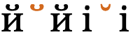
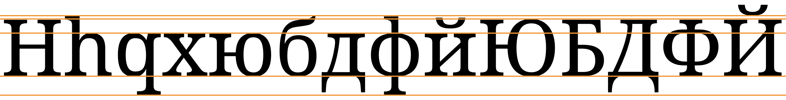
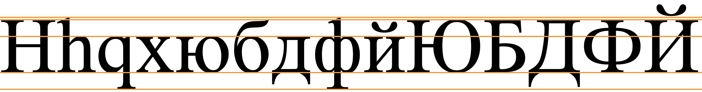
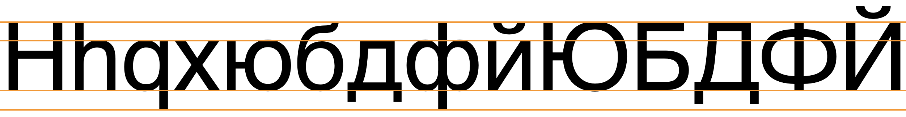

This page brings together basic information about the Cyrillic script and its use for the Ukrainian language. It aims to provide a brief, descriptive summary of the modern, printed orthography and typographic features, and to advise how to write Ukrainian using Unicode.
Select part of this sample text to show a list of characters, with links to more details. Source
Change size: 24px
Стаття 1. Всі люди народжуються вільними і рівними у своїй гідності та правах. Вони наділені розумом і совістю і повинні діяти у відношенні один до одного в дусі братерства.
Стаття 2.
Кожна людина повинна мати всі права і всі свободи, проголошені цією Декларацією, незалежно від раси, кольору шкіри, статі, мови, релігії, політичних або інших переконань, національного чи соціального походження, майнового, станового або іншого становища.
Крім того, не повинно проводитися ніякого розрізнення на основі політичного, правового або міжнародного статусу країни або території, до якої людина належить, незалежно від того, чи є ця територія незалежною, підопічною, несамоврядованою або як‐небудь інакше обмеженою у своєму суверенітеті.
Usage & history
Ukrainian is the native language of around 40 million people and is written using a version of the Cyrillic script. Although Ukraine has many Russian speakers, particularly in the east and south of the country, in 2001 around 88% of Ukrainians were able to communicate in the Ukrainian language, and its use in the population has been increasing for some years.wul
українська абеткаʊkrɐˈjinʲsʲkɐ ɐˈbɛtkɐUkrainian alphabet
The script is named in honor of the two Byzantine brothers, Saints Cyril and Methodius, who created the earlier Glagolitic alphabet. Modern scholars believe that Cyrillic was developed and formalized by early disciples of Cyril and Methodius.
Cyrillic is derived from the Greek uncial script, augmented by letters from the older Glagolitic alphabet, including some ligatures. These additional letters were used for Old Church Slavonic sounds not found in Greek, and the Cyrillic script was initially used for writing Old Church Slavonic (also called Old Bulgarian), The script has changed over the intervening centuries to the point that Old Church Slavonic is sometimes considered a separate script.
Several orthographic reforms were introduced over the course of the 19th and 20th centuries. The latest version of the orthography was defined by the Ukrainian National Commission on Spelling and approved by the Cabinet of Ministers of Ukraine on May 22, 2019.
Cyrillic is an alphabet. Letters typically represent a consonant or vowel sound. See the table to the right for a brief overview of features for the modern Ukrainian language.
Of the 441 characters in the Unicode Cyrillic blocks, 177 are historic (33%) and 2 are for Lithuanian dialectology. The remaining 262 are just letters – no punctuation, digits, or combining characters. These are all bicameral, which brings the number of distinct modern letters to 131. Although modern Cyrillic text tends to use precomposed forms, rather than combining diacritics separately with base letters, many extended characters are formed by slightly tweaking a set of basic shapes.
Ukrainian text runs left-to-right in horizontal lines. Words are separated by spaces. The visual forms of letters don't usually interact.
The script is bicameral. The shapes of the upper and lowercase forms are typically the same. There can be a significant difference, however, between regular and cursive/italic shapes for the same character.
Ukrainian is an alphabet where vowels are written using 10 vowel letters, 4 of which usually indicate palatalisation of the previous consonant. Palatalisation can otherwise be applied or removed using the hard and soft signs.
There are no special mechanisms to represent standalone vowels. Combining marks are normally not used, and only occur in decomposed text.
Numbers use ASCII digits.
The visual forms of letters don't usually interact.
The following table summarises the main vowel to character assigments.
Vowels preceded by ʲ cause the preceding consonant to be palatalised. Where 2 transcriptions are given for a symbol they show stressed and unstressed pronunciations. Diphones typically occur for standalone vowel sounds. The bottom row shows the glides/semivowels used to make diphthongs.
Standard Ukrainian uses 10 vowel letters (20 characters).
The following 6 vowels are normally used after a 'hard' consonant (ie. one that isn't palatalised).
ї␣и␣у␣е␣о␣аЇ␣И␣У␣Е␣О␣А
The other letters usually occur after a 'soft' (palatalized) consonant or as standalone vowels.
і␣ю␣є␣яІ␣Ю␣Є␣Я
When used after a palatalised consonant these vowels don't begin with j-, eg. the following shows letter to sound associations for the word
будяк
бb
уʊ
дˈdʲ
яa
кk
On the other hand, these letters may also be used after a hard consonant followed by ʼ [U+02BC MODIFIER LETTER APOSTROPHE] (the hard sign), in which case the vowel sound is preceded by j-, eg.
інтервʼю
The vowels generally have different pronunciations in stressed vs. unstressed syllables, however such allophonic variations are not captured in the orthography. Click on the letters in the tables above for more information on that.
Vowel diacritics
Vowel diacritics only appear in decomposed text. In normal Ukrainian texts there are no combining marks.
The marks that appear after decomposition are:
̆␣̈␣́
Diphthongs
Two consonant characters are used to form diphthongs.
в [U+0432 CYRILLIC SMALL LETTER VE] is generally used as a consonant, but when it appears as the coda of a syllable it is pronounced u̯, eg.
кров
Standalone vowels
і␣ї␣ю␣є␣яІ␣Ї␣Ю␣Є␣Я
At the start of a word, or after another vowel, Ukrainian uses the 'ioticised' letters. Used in these locations, the sound of all the above vowels except і [U+0456 CYRILLIC SMALL LETTER BYELORUSSIAN-UKRAINIAN I] is preceded by j-, eg.
юнийсоюзкомпʼютерімла
Vowel absence
tbd
Vowel sounds to characters
This section maps Ukrainian vowel sounds to common graphemes in the Cyrillic orthography. Click on a grapheme to find other mentions on this page (links appear at the bottom of the page). Click on the character name to see examples and for detailed descriptions of the character(s) shown.
i
і діло
І
i̯
й when it occurs after a vowel, or (in some words) before an initial consonant. герой
Й
ji
ї їжак
Ї
u
у in stressed syllables. усунути
ю after palatalised consonant. люди
У
Ю
u̯
в allophone occurring as a syllable coda. кров
В
ju
ю as a standalone vowel or after a hard sign. юний
Ю
ɪ
и бити
И
ʊ
у in unstressed syllables. укус
ю after a palatalised consonant in unstressed syllables. людина
У
Ю
jʊ
ю as a standalone vowel or after a hard sign in unstressed syllables. юрба
Ю
e
е in unstressed syllables. епітет
є after a palatalised consonant in unstressed syllables. майбутнє
и in unstressed syllables. бажати
Е
Є
И
je
є in unstressed syllables. епітет
Є
ɛ
е еліпс
є after a palatalised consonant. суттєвий
Е
Є
jɛ
є as a standalone vowel or after a hard sign. єдваб
Є
ɔ
о ожина
О
a
а in stressed syllables. аматор
я after a palatalised consonant in stressed syllables. будяк
А
Я
ɐ
а in unstressed syllables. багатий
я after a palatalised consonant in unstressed syllables. боятися
А
Я
ja
я as a standalone vowel or after a hard sign. якір
Я
jɐ
я as a standalone vowel or after a hard sign in unstressed syllables. якби
Я
Consonants
Consonant summary table
The following table summarises the main consonant to character assigments.
The left column is lowercase, and the right uppercase.
Ukrainian uses 20 consonants (40 characters, if you include uppercase and lowercase), plus a hard and soft sign. Click on the lowercase letters for detail information about usage.
Most of the consonants can be pronounced with or without palatisation, ie. 'hard' or 'soft', respectively. During palatalisation the tongue is raised towards the palate while the consonant is pronounced, eg. compare
бананбаня
Palatalisation is indicated by the letter that follows the consonant. When the vowel letters ї ю є я follow a consonant, the initial j- sound which is associated with those characters in standalone positions is dropped, and the preceding consonant is palatalised.
The soft sign may also be used when you want the consonant to be palatalised but retain the initial j- of the following vowel, eg.
досьє
To write a hard consonant followed by a vowel that retains the initial j-, follow the consonant with the hard sign, ʼ [U+02BC MODIFIER LETTER APOSTROPHE], eg.
пʼять
Note that this shows that there is a difference between пʼят and пять.
A few consonant sounds are generally always hard.
Onsets
tbd
Finals
Unlike Russian, voiced consonants at the end of a syllable or word remain voiced, eg.
шоколадтрубкозуб
Consonant clusters
tbd
Consonant length
tbd
Consonant sounds to characters
This section maps Ukrainian consonant sounds to common graphemes in the Cyrillic orthography. Click on a grapheme to find other mentions on this page (links appear at the bottom of the page). Click on the character name to see examples and for detailed descriptions of the character(s) shown.
Sounds listed as 'infrequent' may be allophones, or sounds used for foreign words, etc.
Stops
p
п покупка
П
b
б багаж
Б
t
т теплота
тʼ
Т
Тʼ
tʲ
т when followed by a softening vowel. батяр
ть
Т
ТЬ
d
д дослід
дʼ
Д
Дʼ
dʲ
д when followed by a softening vowel. дід
дь
Д
ДЬ
k
к канчук
К
kʲ
к when followed by 0456. кіно
К
ɡ
ґ ґирлиґа
Ґ
Affricates
t͡s
ц цацка
цʼ
Ц
Цʼ
d͡z
дз дзиґа
ДЗ
t͡sʲ
ц when followed by a softening vowel. кориця
ць міць
Ц
ЦЬ
t͡ʃ
ч чоловічий
Ч
d͡ʒ
дж джинси
ДЖ
t͡ʃʲ
ч when followed by a softening vowel. обличчя
Ч
ʃt͡ʃ
щ щур
Щ
ʃt͡ʃʲ
щ when followed by a softening vowel. щітка
Щ
Fricatives
β
в allophone sometimes found before back vowels.
В
f
ф фосфор
Ф
fʲ
ф usually only when followed by і. суфікс
Ф
ʋ
в allophone occuring before front vowels. вежа
В
s
с селянство
сʼ
С
Сʼ
sʲ
с when followed by a softening vowel. свідомість
сь вісь
С
СЬ
z
з загроза
зʼ зʼїсти
З
Зʼ
zʲ
з when followed by a softening vowel. зяблик
зь
З
ЗЬ
ʃ
ш шия
Ш
ʃʲ
ш when followed by a softening vowel. шість
шь
Ш
ШЬ
ʒ
ж жарт
Ж
x
х хата
Х
xʲ
х when followed by і. підхід
Х
ɦ
г гегемонія
Г
Nasals
m
м мамут
М
mʲ
м when followed by і. комір
М
n
н насінина
нʼ
Н
Нʼ
nʲ
н when followed by a softening vowel. здання
нь
Н
НЬ
Other
w
в generally found before back vowels. вогонь
В
r
р резервіст
рʼ карʼєра
Р
Рʼ
rʲ
р when followed by a softening vowel. грязь
рь вірьовка
Р
РЬ
l
л лелека
лʼ
Л
Лʼ
lʲ
л when followed by a softening vowel. пляма
ль король
Л
ЛЬ
j
й йога
Й
Other features
Diacritics
́␣̈␣̆
́ [U+0301 COMBINING ACUTE ACCENT] is used to indicate where the stress falls in a word for educational materials, dictionaries, and such. The position of the stress is distinctive, and not always predictable, eg. compare
за́мокзамо́к
Cyrillic doesn't normally have any of the changeability of complex scripts. Characters are typically separate and self-contained. However, there can be a significant difference in shape between regular and italic/cursive font shapes for the same character.
Conservative transformations between regular and italic.
More radical transformations between regular and italic.
Note in particular the italic form of т in the figure just above, which looks similar to the italic form of м shown in the previous figure.
The shapes of the italic forms can also vary by language.w
The shape of the breve sign in Cyrillic is different from that used for Latin text.s A font such as Brill can detect the appropriate shape from the adjacent characters.

̆ [U+0306 COMBINING BREVE] between cyrillic and latin characters changes shape in the Brill font.
Case & transforms
Ukrainian is bicameral, and applications may need to enable transforms to allow the user to switch between cases.
Graphemes
Ukrainian graphemes are straightforward, and can be mapped to Unicode grapheme clusters.
Grapheme clusters
Base (Combining_mark)*
The 2 combining marks that occur in Ukrainian appear only on the rare occasions when the text is decomposed, and only one combining mark at a time appears after any base. All such decompositions conform to Unicode grapheme clusters.
Click on the text version of this word to see more detail about the composition.
гіркий
(decomposed)
Punctuation & inline features
Word boundaries
Words are separated by spaces.
Phrase & section boundaries
,␣;␣:␣.␣?␣!
Cyrillic uses ASCII punctuation.
phrase
, [U+002C COMMA]
; [U+003B SEMICOLON]
: [U+003A COLON]
sentence
. [U+002E FULL STOP]
? [U+003F QUESTION MARK]
! [U+0021 EXCLAMATION MARK]
Bracketed text
(␣)
Ukrainian commonly uses ASCII parentheses to insert parenthetical information into text.
start
end
standard
( [U+0028 LEFT PARENTHESIS]
) [U+0029 RIGHT PARENTHESIS]
Quotations
«␣»␣„␣“
Ukrainian uses angle quotation marks without space, like Russian, or the low and high marks used for Polish and German.wua,#Letterforms_and_typography
CLDR lists the following additional punctuation marks.
§␣‐␣–␣…
Line & paragraph layout
Line breaking & hyphenation
Spaces between words provide the primary line break opportunities.u
Line-edge rules
As in almost all writing systems, certain punctuation characters should not appear at the end or the start of a line. The Unicode line-break properties help applications decide whether a character should appear at the start or end of a line.
The following list gives examples of typical behaviours for some of the characters used in Ukrainian. Context may affect the behaviour of some of these and other characters.
Click/tap on the characters to show what they are.
« „ ( should not be the last character on a line.
» “ ) . , ; ! ? % should not begin a new line.
Text alignment & justification
Justification is done, principally, by adjusting the space between words.
Baselines, line height, etc.
Cyrillic uses the so-called 'alphabetic' baseline, which is the same as for Latin and many other scripts.
Cyrillic has little in the way of ascenders and descenders, and mostly the font metrics are the same as for ASCII text. One difference is the use of a couple of diacritics, which rise above the ASCII ascender height in capital letters..
To give an approximate idea, fig_baselines compares Latin and Cyrillic glyphs from Noto fonts.

Font metrics for Latin text compared with Cyrillic glyphs in the Noto Serif (top) and Noto Sans (bottom) fonts.
fig_baselines_other shows similar comparisons for the Doulos SIL and Helvetica fonts.


Latin font metrics compared with Cyrillic glyphs in the Doulos SIL (top) and Helvetica (bottom) fonts.
Counters, lists, etc.
You can experiment with counter styles using the Counter styles converter. Patterns for using these styles in CSS can be found in Ready-made Counter Styles, and we use the names of those patterns here to refer to the various styles.
The modern Ukrainian orthography uses 4 alphabetic styles, besides the ASCII decimal numeric style.
Alphabetic
The lower-Ukrainian alphabetic style uses these letters.